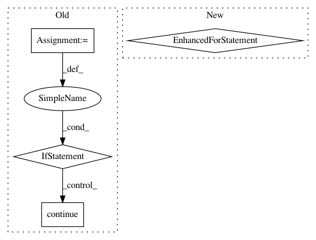

2de52a8976971da4836727ba9242fedcc7474878,src/sdk/pynni/nni/compression/torch/compressor.py,Pruner,export_model,#Pruner#Any#Any#Any#Any#,213
Before Change
if self.detect_modules_to_compress() and not self.mask_dict:
_logger.warning("You may not use self.mask_dict in base Pruner class to record masks")
assert model_path is not None, "model_path must be specified"
for name, m in self.bound_model.named_modules():
if name == "":
continue
masks = self.mask_dict.get(name)
if masks is not None:
mask_sum = masks["weight"].sum().item()
mask_num = masks["weight"].numel()
_logger.info("Layer: %s Sparsity: %.2f", name, 1 - mask_sum / mask_num)
m.weight.data = m.weight.data.mul(masks["weight"])
if masks.__contains__("bias") and hasattr(m, "bias") and m.bias is not None:
m.bias.data = m.bias.data.mul(masks["bias"])
else:
_logger.info("Layer: %s NOT compressed", name)
torch.save(self.bound_model.state_dict(), model_path)
_logger.info("Model state_dict saved to %s", model_path)
if mask_path is not None:
torch.save(self.mask_dict, mask_path)
After Change
mask_dict = {}
self._unwrap_model() // used for generating correct state_dict name without wrapper state
for wrapper in self.get_modules_wrapper():
weight_mask = wrapper.weight_mask
bias_mask = wrapper.bias_mask
if weight_mask is not None:
mask_sum = weight_mask.sum().item()
mask_num = weight_mask.numel()
_logger.info("Layer: %s Sparsity: %.2f", wrapper.name, 1 - mask_sum / mask_num)
wrapper.module.weight.data = wrapper.module.weight.data.mul(weight_mask)
if bias_mask is not None:
wrapper.module.bias.data = wrapper.module.bias.data.mul(bias_mask)
// save mask to dict
mask_dict[wrapper.name] = {"weight": weight_mask, "bias": bias_mask}
torch.save(self.bound_model.state_dict(), model_path)
_logger.info("Model state_dict saved to %s", model_path)
if mask_path is not None:
torch.save(mask_dict, mask_path)
In pattern: SUPERPATTERN
Frequency: 3
Non-data size: 4
Instances
Project Name: microsoft/nni
Commit Name: 2de52a8976971da4836727ba9242fedcc7474878
Time: 2020-01-16
Author: 656569648@qq.com
File Name: src/sdk/pynni/nni/compression/torch/compressor.py
Class Name: Pruner
Method Name: export_model
Project Name: tryolabs/luminoth
Commit Name: 12bba41d0a8f8eb2f236f7efdd4f656338c1281b
Time: 2018-09-04
Author: agustin@tryolabs.com
File Name: luminoth/tools/dataset/readers/object_detection/csv_reader.py
Class Name: CSVReader
Method Name: _get_records
Project Name: ray-project/ray
Commit Name: 50784e249660f84011aee464d163784741337d28
Time: 2020-09-16
Author: fyrestone@outlook.com
File Name: dashboard/head.py
Class Name: DashboardHead
Method Name: _get_nodes